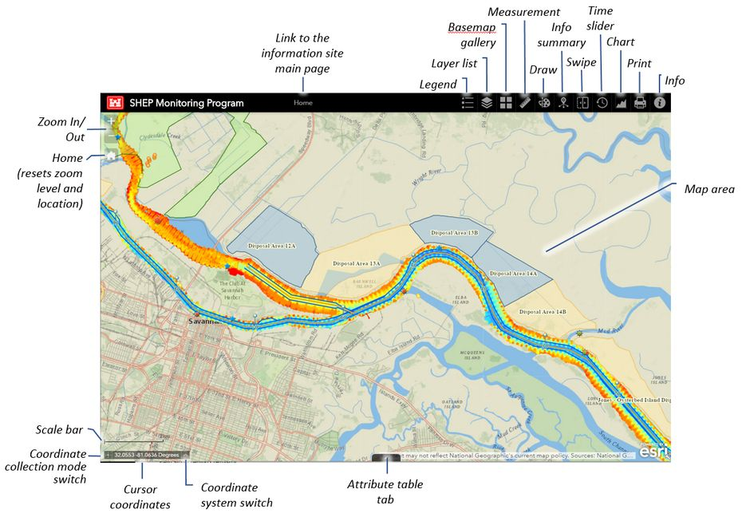

Map Portal - Interface Elements

Zoom In/Out Buttons:
- Use the Zoom buttons located in the upper left corner of the map to increase/decrease the scale of the map.
- The middle mouse button can also be used to quickly change the scale. Rolling the mouse wheel away from you increases detail. Rolling the mouse wheel towards you decreases detail.
Home Button:
- The home button can be used to quickly return to original zoom level of the map centered on Barnwell Island.
Scale Bar:
- Shows ground length for a given map scale in English and metric systems.
Coordinate Collection Mode Switch:
- Use this switch to toggle between collecting individual coordinates and continuous coordinates.
- Individual coordinates: coordinates are retrieved and updated only when user clicks on map
- Continuous coordinates: coordinates are collected and updated continuously as the user hovers the cursor over different areas of the map. No mouse click is required to collect coordinates
Coordinate System Switch:
- Click the arrow located to the right of the coordinate cursor coordinates box to change the coordinate system used to identify locations within the map. Coordinate system options are presented below:
- WGS-1984 Web Mercator Auxiliary Sphere (3857): coordinates are presented in degrees latitude and longitude. Coordinates will be presented following this coordinate system for both coordinate collection modes described above.
- NAD 1983 StatePlane Georgia East FIPS 1001 Feet (2239): coordinates are presented in meters (Y and X). Coordinates will be presented following this coordinate system only for the Individual coordinate collection mode.
Legend Button:
- Displays list of layers and their symbolizations.
Layer List Button:
- Controls layer visibility. Layers can be moved up and down and turned on and off controlling layer stacking and the layout of the map.
- Attribute Tables containing data values for individual layers can be displayed and used for map analysis.
- Transparency of each layer can be controlled.
- Users can disable pop-up windows (tooltips).
Base Map Gallery Button:
- User may choose between multiple base map options in this pane.
Measurement Button:
- Launches measurement panel, which includes the options below:
- Area measurement: User can draw a shape and collect area measurements from it in a variety of units.
- Linear distance measurement: User can measure the distance between two points in a variety of units.
- Location/coordinate retrieval (decimal degrees): returns degree, minute, seconds information for clicked locations.
Draw Button:
- Launches a Drawing Tool, which allows users to draw features with a varity of options for color, style, transparency, and line width. Measurements can be retrieved from drawings.
Info Summary Button:
- Features currently displayed on the map are listed in the info summary window allowing users to target specific features.
- Clicking one instance of a feature locates that feature on the map and presents a tooltip with information on the feature.
Swipe Button:
- Swipe tool allows for the selection of a layer for change in condition analysis. (e.g., change in bathymetry values).
Time Slider Button:
- Allows for the display of changes in values over time. (e.g., Sturgeon count).
Chart Button:
- User can create a chart of Sturgeon counts based on a user defined area.
Print Button:
- Allows for creation of PDF versions of the map to be displayed for printing and/or storage.
Info Button:
- Information on Savannah Harbor Expansion Project and web map app. Includes contact information for the website/map portal and the SHEP Monitoring Program.
Map Area:
- Click any object on the map to pull up a tooltip containing its attribute information.
Attribute Table Tab:
- Click the tab at the bottom of the mapping app to show or hide attribute table for any selected feature.
- Turn on or off columns.
- Export results to CSV.